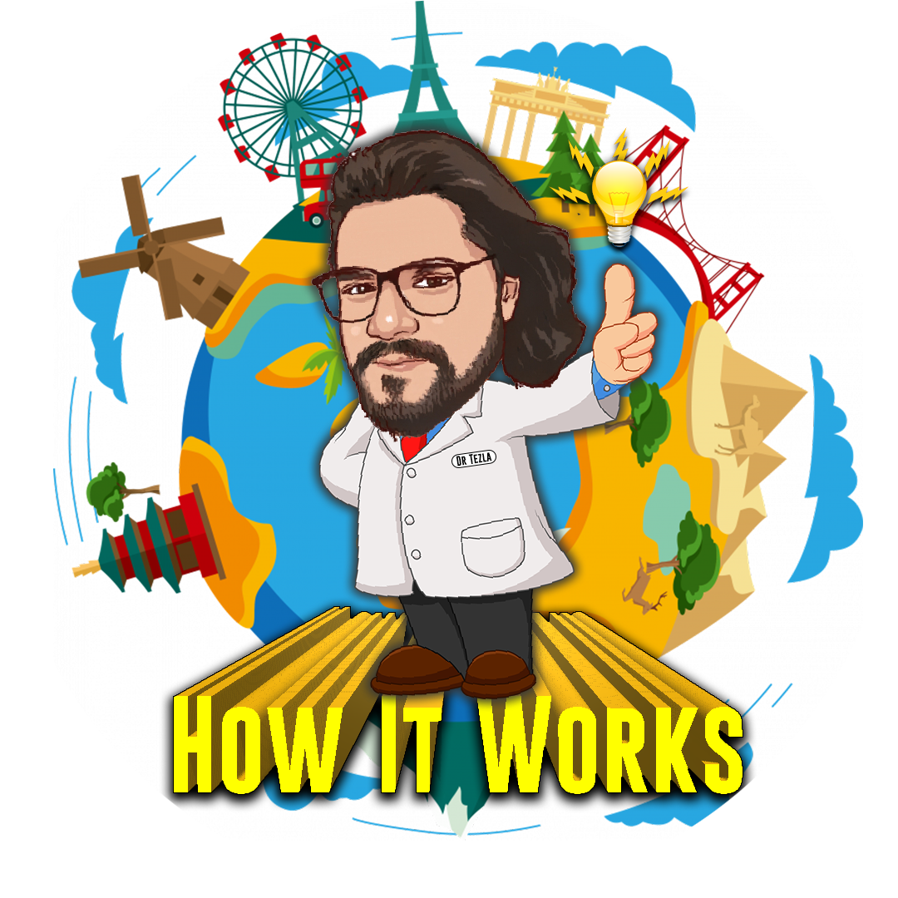
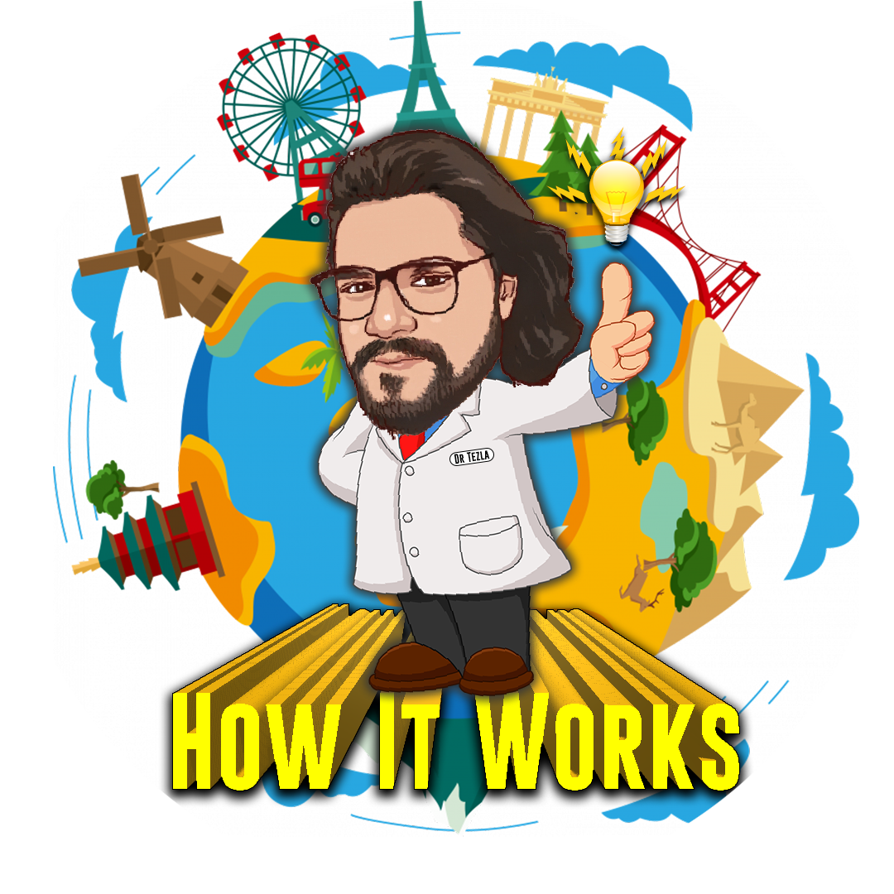

Our Best Videos
Follow Us On

appatakker_peteruh tezlas_reveal how_it__works
About
APPATAKKER PETER'UH
Our journey began on August 24, 2017, when a group of friends came together to create something unique and entertaining. Our channel was born, and it quickly became a platform for sharing hilarious spoofs of the everyday scenarios that unfold in our lives. We dedicated ourselves to making our viewers laugh and providing a lighthearted escape from the challenges of daily life. Over the years, we poured our creativity into crafting and sharing a total of 40 videos, each with its own twist on the current events and trends happening around us. The response from our audience was heartwarming, and we couldn't be more grateful for the 1.09k subscribers who joined us on this comedic journey. While our journey temporarily paused in 2020 due to unforeseen circumstances, our passion for humor and creativity never waned. We look forward to a brighter future where we can once again bring laughter and entertainment to your screens. Stay tuned for more laughs and unforgettable moments with us as we continue to share our spoofs and keep the joy alive!
TEZLAS'S REVEAL
Back in the spring of 2016, my journey as a content creator began when I started this channel. It was initially named the "Tesla Innovation Centre," reflecting my passion for innovation and creativity. Later, it transformed into "Tesla Motivations," highlighting my commitment to inspiring and motivating others. And finally, it found its true identity as "Tezla's Reveal," a name that truly represented the essence of the channel. After a period of exploration and evolution, on November 2, 2021, I embarked on a new adventure, sharing my passion for moto vlogging and bike reviews with the world. The response was incredible, and I'm immensely grateful for the 1.01k subscribers who joined this journey. Throughout this exciting chapter, I've poured my heart and soul into creating and sharing nearly 159 videos, each a labor of love. However, as life unfolds, circumstances have led me to step away temporarily. But rest assured, the love for content creation and sharing my passions still burns bright. I look forward to a time when I can return and continue this journey, bringing you more moto vlogs, bike reviews, and captivating content. Thank you for being part of this adventure. Stay tuned for more exciting updates!
HOW IT WORKS
On May 4, 2022, the journey of our channel embarked, driven by a passion for science and technology. In the beginning, the response was modest, but with unwavering dedication, we persevered. Over the course of several months, we shared 205 videos, each one a labor of love, aimed at exploring the marvels of science and technology. The turning point arrived when our audience began to grow, and we reached a remarkable milestone of 50k subscribers. The support and engagement from our community were incredible, and it inspired us to keep pushing the boundaries of what we could create. Currently, there might be a pause in our video uploads for reasons beyond our control, but we want to assure you that our love for science and technology remains as strong as ever. We are committed to returning and bringing you more amazing and insightful science videos in the near future. Thank you for being part of this incredible journey, and we can't wait to share more discoveries and wonders with you soon!
MOST IMPORTANT THING
Since 2016, our YouTube journey has been marked by relentless determination and unwavering commitment. It's true; we haven't earned a single rupee from our YouTube endeavors. Instead, we invested not only our hard-earned money but also countless hours and boundless effort into our channel. It's been a long and challenging road, and the struggles have tested our resolve. But here's the thing – giving up has never been an option for us. We believe in our content, our passion, and our community. We are confident that with every hurdle we face, we become stronger and more resilient. The setbacks we encounter are not roadblocks but stepping stones towards our ultimate success. So, even though we haven't seen the financial fruits of our labor yet, our vision remains unwavering, and our dreams undiminished. We're not here to chase quick gains but to build something meaningful, inspiring, and enduring. We will keep pushing forward, learning, and growing, and we have no doubt that our breakthrough is just around the corner. Thank you for being a part of this incredible journey with us. Stay tuned, because we're coming back stronger than ever!